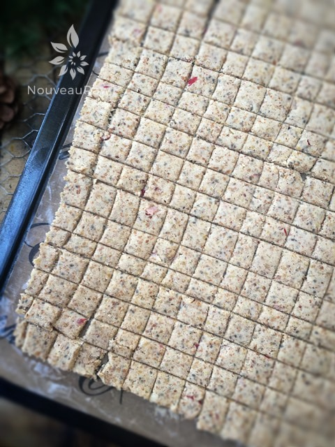
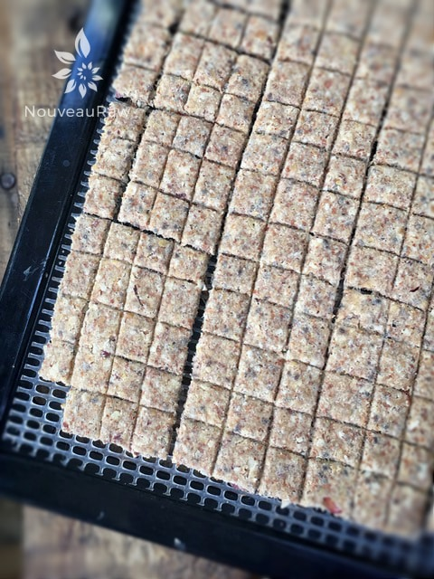

Cinnamon Apple Graham Cracker Cereal

– raw, vegan, gluten-free –
In all the excitement of this cereal, I failed to measure out how much it yielded. But I assure you that it makes a large amount, which is perfect when creating your raw pantry food staples. You can also portion the cereal and freeze it, keeping it fresh and ready for your morning breakfasts. I do this a lot.
These little squares are full of a delicious cinnamon apple graham cracker flavor. It tastes incredible with fresh diced apple tossed in for added texture and sweetness.
The Art of Eating Cereal
Like you need to be told how to enjoy a bowl cereal. When I get the chance to devour a bowl of raw goodness, I always return to my childhood rituals.
First, you must create a quiet space and time. Grab your favorite cereal bowl. I know you have one. Some are dainty with flowers on them, and others are the size of mixing bowls. Now, add the cereal to your vessel of choice.
Next comes adding the milk, which requires perfect timing and technique. The milk must be poured in at the right moment, not a second before it is time to sit down.
From this moment on the clock is ticking. Once the milk is poured, phones, doorbells, rambunctious kids (and husbands) must be kindly ignored. There is no need to panic, but too much distraction can and will lead to irreparable “soggification” of those adorable hand-rolled, tiny square-cut pieces of cereal! Get my drift?
Now, gently submerge the squares down into the milk with the back of the spoon. There isn’t anything pleasant about spooning dry cereal into your tender mouth. Cereal is meant to be shoveled in without consciousness, treat it as it is, a delicious cold bowl of heaven, with just enough natural sugar to sweeten the milk perfectly. I hope you enjoy this recipe. Please be sure to comment below. blessings, amie sue
Preparation:
- After soaking the pecans and almonds, drain and rinse them. If you already have soaked and dehydrated pecans and almonds in the pantry, use those.
- Place the pecans and almonds in the food processor, fitted with the “S” blade, and process until it resembles a small crumble. Place in a large bowl.
- Add the almond pulp to the ground nuts and mix. Set aside.
- In the same food processor bowl combine the apples, flaxseed, almond butter, chia seeds, maple syrup, cinnamon, salt, and stevia. Process until creamy.
- Pour over the nuts and almond pulp and mix together with your hands.
- Spread the batter 1/4″ thick over the teflex sheet that comes with the dehydrator.
- Be careful that you don’t spread the batter to thin or the crackers will break too easily.
- I used two Excalibur trays, spreading the batter to the edges.
- Score the cereal squares and dehydrate at 145 degrees (F) for 1 hour, then reduce to 115 (F) degrees for 6-8 hours.
- When dry enough, flip them over onto the mesh sheet and continue drying for another 6-8 hours or until completely dry.
- Store the cereal in an airtight container for one to two weeks in the fridge, longer in the freezer.
The Institute of Culinary Ingredients™
- Learn more about maple syrup by clicking (here).
- Click (here) to learn why I use stevia.
- Why do I specify Ceylon cinnamon? Click (here) to discover the answer.
- What is Himalayan pink salt and does it matter? Click (here) to read more about it.
- Learn how to make raw almond butter by clicking (here).
- Learn how to grind flax-seeds for ultimate freshness and nutrition. Click (here).
Culinary Explanations:
- Why do I start the dehydrator at 145 degrees (F)? Click (here) to learn the reason.
- When working with fresh ingredients, it is important to taste test as you build a recipe. Learn why (here).
- Don’t own a dehydrator? Learn how to use your oven (here). I do however believe that it is a worthwhile investment. Click (here) to learn what I use.

The cereal is all scored and ready for the dehydrator. Below, the crispy little squares are all ready for consumption.

Be sure to store the cereal in an airtight container to prevent softening.
The NRFDA (Nouveau Raw Food Determining Association) conducted the following test.
Nouveau Raw Kitchens, The Soggy Cereal Test.
The subject: Cinnamon Apple Graham Cracker Cereal.
The Objective: To see how long this raw cereal could stand up to almond milk before getting soggy.
No animals were harmed in the process.
Results posted below.
Yep, it was that good. The lab tech conducting this experiment consumed the whole bowl of the subject matter. The test ended at eight minutes, and the cereal still had a little crunch, but the edges were softening. This concludes our analysis. :) Status: Approved!
© AmieSue.com